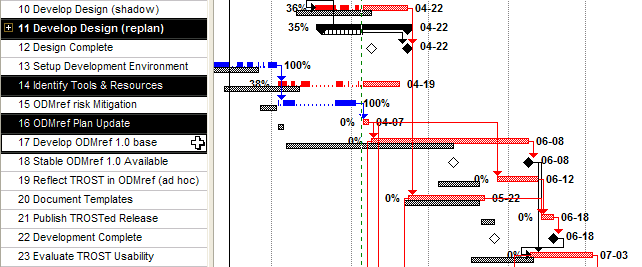
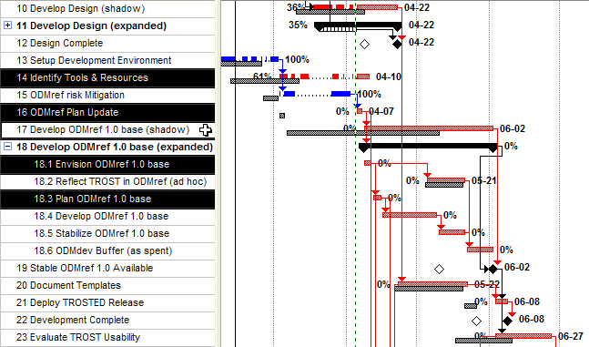

Project
P050401 ODMref 1.0
Update Plan
|
|
Project
P050401 ODMref 1.0 |
| Type: Project Integration Management | Project ID: P050401 |
| Style: Abbreviated | Status: Complete |
|
|
|
|
| Assigned To: Dennis E. Hamilton | Defined By: Dennis Hamilton (2005-04-05) |
| Date Initiated: 2005-04-05 | Date Completed: tbd |
The ODMref 1.0 development is carried as a single large subtask in the tracking of the TROST Pilot project:

Figure 1. Lengthy "Develop ODMref 1.0 base" on critical path (in-progress tasks highlighted)
[TROST Pilot Project Plan version 6.2 with tracking through 2005-04-04 (green dashed line)]
Until task 17, "Develop ODMref1.0 base," is planned in greater detail using the rolling-wave planning of the TROST Pilot Project, we will not know how to shed critical path and scale the ODMref 1.0 development to fit the unmovable TROST and dissertation submission deadline of July 28. In detailing this section of the project, it is desirable to bring the "Evaluate TROST Usability" back as close to a 06-21 completion, as possible.
There are the following concerns at this point:
ODMref Risk Mitigation took much longer than originally envisioned and was reduced in scope in order to be completed. The ODMref Plan Update is occurring one month later than on the baseline plan as the result of that and other delays in the TROST Project in which ODMref 1.0 development is embedded.
Insufficient Buffer (4 days) remains before the immovable deadline (July 28) for TROST and dissertation submission. Having the Evaluation of TROST Usability be so late risks having too little time to complete the final edits of the dissertation (not shown).
ODMref 1.0 Functional Specification requires more work definition and bottom-up identification of work items. The detailed work-breakdown structure needs to provide a generous buffer, shed critical path, and permit defeaturing to achieve a meaningful deliverable in the reduced time available. Additional updates for functionality can be provided by follow-on projects after the dissertation usage has been accomplished.
Critical activities have dropped out. There are activities identified in the original ODMref 1.0 approach materials that have not been put in action in this plan. Some of them, especially risk management, are critical.
Context and Connection Required. Materials supporting the definition of ODMref 1.0 and providing the project context need to be published to the ODMA Interoperability Exchange. This is needed for reliably managing the activity and for timely engagement of others who may wish to review and be involved in the project.
The allowance for task 16, "ODMref Plan Update," will be used to
Expand the activity into small subtasks, including a buffer of at least 20% of the overall allowance.
Re-organize dependencies where possible to make the progression more understandable and easily adapted to circumstances.
Do not rely on the TROST Pilot design development (already expanded in this manner) to provide much design support for ODMref 1.0 design. [We will employ the Microsoft Solutions Framework Process Model in choosing a breakdown into subtasks.]
Start building up the ODMref 1.0 development, project materials, and tracking information on the ODMA Interoperability Exchange site. This will allow review, comment, and engagement to begin early in "Develop ODMref 1.0 base."
Recover the risk management and other project-quality areas that have been ignored up to this point.
Start managing the near tasks with on-line project folios and work-item tables.
2005-04-05: Create Work Breakdown for the ODMref Plan Update (effort under 18h)
2005-04-08: 2005-04-05 Gather the historical
documents and have them all available for review and reference in the
update. [deferred
into the activities that require them and that will be revising/deepening
them.]
2005-04-05: Take the TROST Pilot allowance for "Develop ODMref 1.0 base" and break it down into a rolling wave-plan with buffer and subtasks. These are to be with monthly milestones and chunks of one week or less.
2005-04-09: 2005-04-05: Create a tracking activity for ODMref 1.0 development and those TROST activities that are visible at the ODMref 1.0 level.
2005-04-08: 2005-04-06: Recover the efforts that
were previously identified and that have not been managed up to this point.
Recovering Risk Management is Critical.
[to be done in the
TROST engagement and ODMref 1.0 envisioning]
2005-04-08:
2005-04-06:
Create
Work-Breakdown Structure that Grounds this Material in terms of outputs and
tasks, over time. Getting the leading (first-wave) tasks, including
summaries, is the most critical with regard to providing a task folio and other structure
for raising the level of accountable effort and managing focus on the
critical elements here.
2005-04-08: Populate an ODMref 1.0 Status Section as a portal to all current status, open and pending projects, and the completed work.

Figure 2. Expanded "Develop ODMref 1.0 base" with critical-path reduction and buffer
[TROST Pilot Project Plan version 6.3 with tracking through 2005-04-04 (green dashed line)]
|
|
You are
navigating the ODMA Interoperability Exchange. |
created 2005-04-05-10:37 -0700 (pdt) by
orcmid |